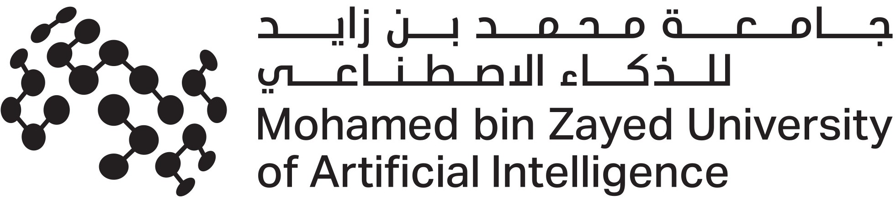
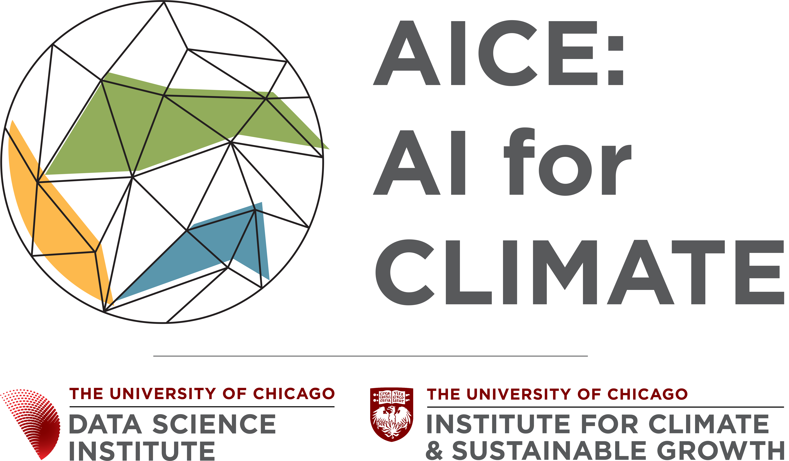

The training program is one arm of a wider research effort. Two of the project's three components are research-driven — tailoring AI forecasts to farmer needs, and advancing the state of the art — so that the methods taught each year keep improving.
Research is led by MBZUAI together with the University of Chicago's AI for Climate initiative.
Re-training AI models with customized objectives — prioritizing rainfall, temperature, and extremes at the 1–10 day lead times that drive planting, irrigation, and harvest decisions.
Moving from single predictions to distributions of possible outcomes — essential for risk assessment and decision-making under uncertainty.
Extending useful skill from days into multi-week and seasonal horizons, one of the hardest and most valuable frontiers for agriculture.
Improving how models transfer to data-sparse LMIC contexts, and integrating physical climate knowledge with data-driven approaches.
Using generative AI to produce high-resolution, locally relevant forecasts from coarse global models.
Building shared benchmarks — validation data, metrics, variables, and thresholds — to test model skill against ground truth (ERA5, CHIRPS, IMERG and national data).
The research moves deliberately from prototype forecasts toward operational tools that national institutions can run themselves.
Peer-reviewed papers, technical reports, and open research from the project will be collected here as they are released. In the meantime, reach out if you'd like to learn more or collaborate.

